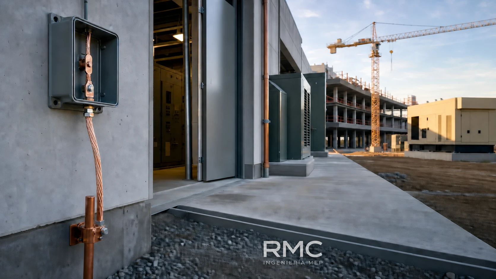
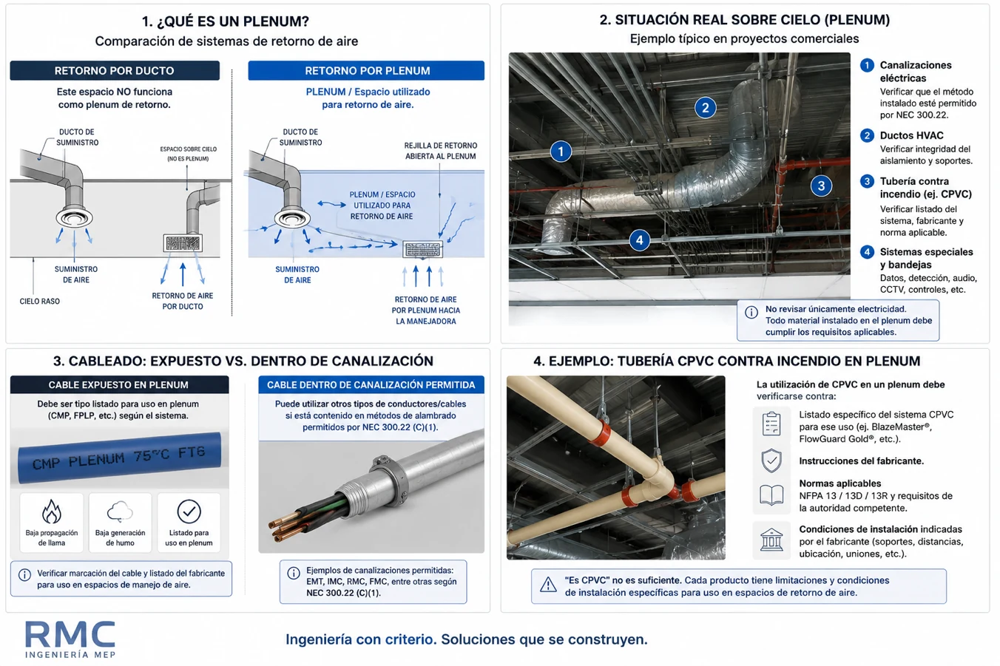

¿Cómo debe inspeccionarse la puesta a tierra de un proyecto?
Una guía práctica para revisar electrodos, unión equipotencial, interruptor principal, varillas, plantas eléctricas, transformadores, pararrayos y grúas.
Leer artículoAnálisis prácticos para convertir requisitos normativos en decisiones de diseño, coordinación e inspección MEP.
Esta biblioteca crecerá progresivamente con nuevos criterios y experiencias de proyecto.

Una guía práctica para revisar electrodos, unión equipotencial, interruptor principal, varillas, plantas eléctricas, transformadores, pararrayos y grúas.
Leer artículo
Una lectura práctica de NEC 300.22 para determinar cuándo un espacio sobre cielo funciona como plenum y qué revisar en cables, canalizaciones, equipos y sistemas MEP.
Leer artículo